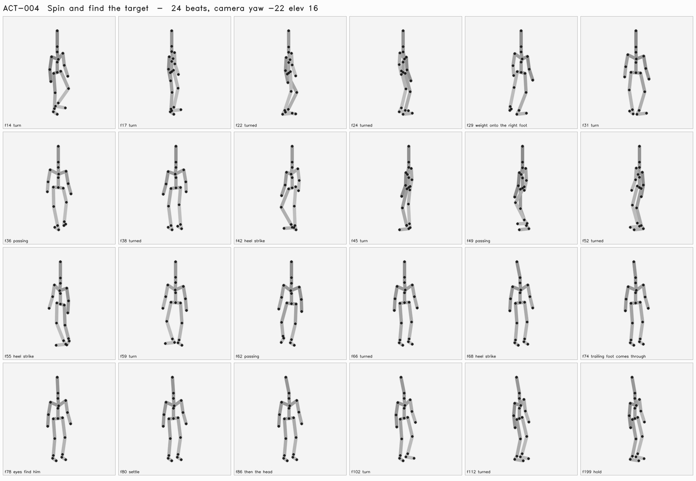

Turn rapidly through a full rotation then settle facing a moving partner.
Passes when: Feet and root agree; turn ends without teleporting; gaze reacquires target.
| frame | who | beat |
|---|---|---|
| 14 | Shim | turn |
| 17 | Bola | turn |
| 22 | Shim | turned |
| 24 | Bola | turned |
| 29 | Shim | weight onto the right foot |
| 31 | Bola | turn |
| 36 | Shim | passing |
| 38 | Bola | turned |
| 42 | Shim | heel strike |
| 45 | Bola | turn |
| 49 | Shim | passing |
| 52 | Bola | turned |
| 55 | Shim | heel strike |
| 59 | Bola | turn |
| 62 | Shim | passing |
| 66 | Bola | turned |
| 68 | Shim | heel strike |
| 74 | Shim | trailing foot comes through |
| 78 | Bola | eyes find him |
| 80 | Shim | settle |
| 86 | Bola | then the head |
| 102 | Bola | turn |
| 112 | Bola | turned |
| 199 | Bola | hold |
| 199 | Shim | hold |

Thresholds come from the spec's crash_lab_checks and are read by the verdict, not restated beside it. A check that did not run says so; a blank is not a pass.
uneven floor · long arms · interrupted spin